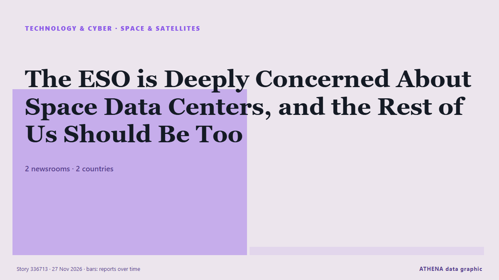

Espace et satellites
SponsoriséPrésenté par  Cybernetics and Artificial Intelligence Lab Welcome to the Cybernetics and Artificial Intelligence Laboratory, established at the Department of Business Administration of the National and Kapodistrian University of Athens. The lab is headed by Professor Dimitrios Thomakos. The lab aims to do research that can be published in top venues. Our research uses tools and methods of Artificial Intelligence, and lies in the following areas: - Forecasting - Decision making - Cyber security - Finance We are always looking forward to collaborating with exceptional students!
Cybernetics and Artificial Intelligence Lab Welcome to the Cybernetics and Artificial Intelligence Laboratory, established at the Department of Business Administration of the National and Kapodistrian University of Athens. The lab is headed by Professor Dimitrios Thomakos. The lab aims to do research that can be published in top venues. Our research uses tools and methods of Artificial Intelligence, and lies in the following areas: - Forecasting - Decision making - Cyber security - Finance We are always looking forward to collaborating with exceptional students!
| 15 nov. | 0 |
|---|---|
| 16 nov. | 1 |
| 17 nov. | 0 |
| 18 nov. | 0 |
| 19 nov. | 0 |
| 20 nov. | 0 |
| 21 nov. | 1 |
| 22 nov. | 0 |
| 23 nov. | 1 |
| 24 nov. | 6 |
| 25 nov. | 7 |
| 26 nov. | 4 |
| 27 nov. | 2 |
| 28 nov. | 0 |
Les titres sont affichés en anglais, tels que publiés.

The ESO is Deeply Concerned About Space Data Centers, and the Rest of Us Should Be Too
The European Southern Observatory has expressed its dismay at the approval of SpaceX's satellite AI system. de Universe Today
GTA VI launch sparks 400% surge in UK sales of physical games, data shows
The blockbuster release on November 19 sparked a resurgence in demand among gamers for physical copies. de Evening Standard (London)
SpaceX's million-satellite approval pushes AI infrastructure into a new supply-chain frontier
As aggressive AI infrastructure buildouts continue to stretch the limits of power availability, land, and thermal management, SpaceX's longstanding ambition to extend the competitive boundaries of AI… de DigiTimes Asia
Japan unveils rover prototype for Moon water mission
Japan's space agency unveiled Wednesday a test model of a rover that will travel to the moon's south pole in a search for water, which could potentially be used for rocket fuel. de Phys.org
Butter chicken in space: China prepares halal feast for Pakistan’s first astronaut
Menu features more than 100 varieties of food for Pakistani astronaut Zeeshan Ali, including beef nihari, lamb korma, curried chickpeas and butter chicken. de Anadolu Agency (English)
Mexico seeking talks with US on SpaceX airspace use
MEXICO CITY, Nov 26 - Mexico is seeking a meeting with US aviation authorities to discuss permits for SpaceX to use Mexican airspace and potentially relocate its launch activities, President Claudia… de The Straits Times
Pakistan makes history as its first astronaut reaches space
A historic moment for Pakistan as Muhammad Zeeshan Ali reaches China's Tiangong space station, becoming the country’s first astronaut in orbit and the first foreign astronaut to join a Chinese crewed… de TRT World
Nasa's asteroid crash test left stadium-sized crater; first images reveal
Images from the ESA's Hera spacecraft show the aftermath of NASA's successful impact on asteroid Dimorphos. de Times of India
Belgium inaugurates Europe’s largest satellite factory
Belgium’s King Philippe on Tuesday, Nov. de Kyiv Post
China's Shenzhou-24 docks with Tiangong, welcomes Pakistani astronaut
China rocket blasts off on Shenzhou-24 mission: state media. de Gulf News
Ariane 6 launches 36 Amazon Leo satellites nine days after Vulcan failure
Amazon is moving its next SpaceX launch for Amazon Leo forward to December. de The Next Web
GTA 6 Earns $3.79 Billion on Launch Day as Rising Costs Challenge Gaming Industry
The launch of Grand Theft Auto VI (GTA 6) has generated an estimated $3.79 billion in worldwide first-day retail sales, setting a new record for an entertainment release, but its success highlights… de Khaama Press
What happens if a nuclear weapon explodes in space?
Earth's atmosphere offers protection from a nuclear blast in space, but satellites are more exposed. de DW English
Using Lunar Craters as Free Radiation Shields for Moon Base Nuclear Reactors
Powering any future lunar base is a massive engineering challenge. de Universe Today
China's Shenzhou-24 spaceship docks with Tiangong space station
China to launch Shenzhou-24 crewed spacecraft on November 25. de CGTN (China)
China sends first foreign astronaut to its space station as Pakistani joins Shenzhou 24 crew
The crew will carry out more than 90 scientific experiments and technology tests. according to China's state media reports. de Euronews English
NASA chief shreds Marjorie Taylor Greene after she denies Moon landing
Former MAGA congresswoman rebuked by space agency’s administrator after “irresponsible” warning of ‘Chernobyl event’ when Army detonates degraded lead azide in Iowa. de The Independent